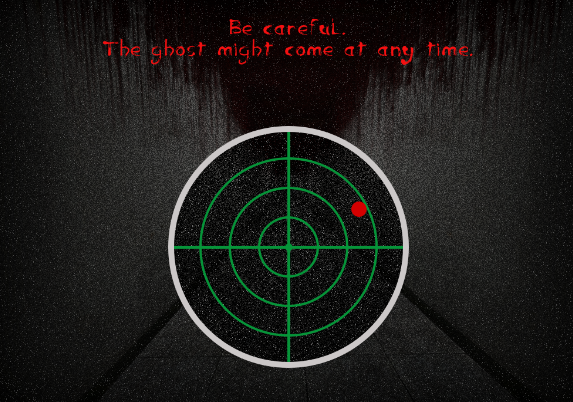
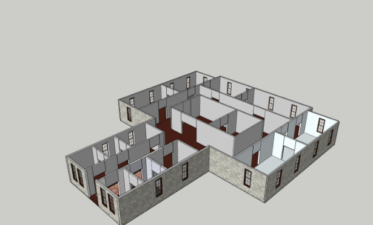
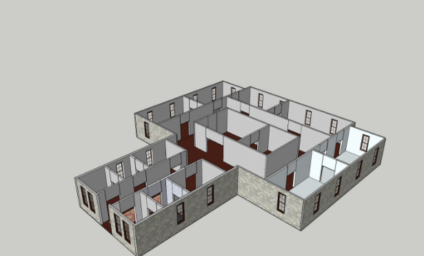
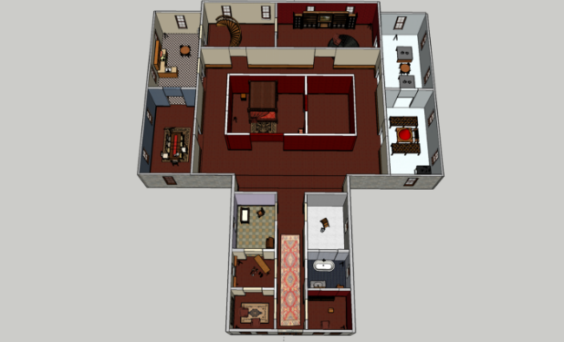
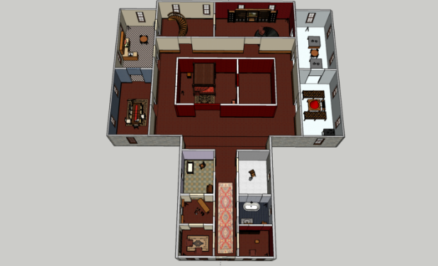
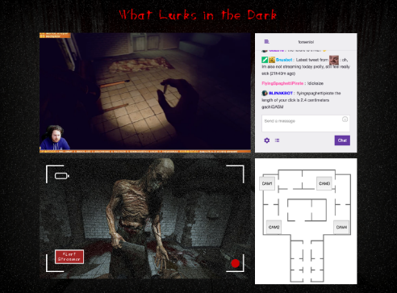
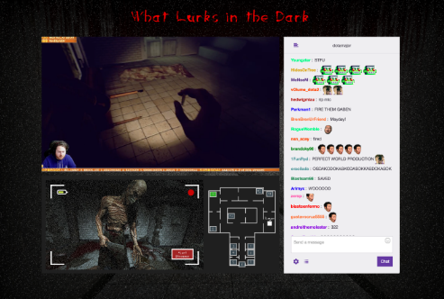

In a team of 3, we were tasked with designing the core functions of a mobile app for elderly care coordinators based on provided personas: Inez, an elderly woman in her late 70s with slight dementia, Hector, a busy nurse who has a short amount of time each day to check in on Inez, and Rosario, Inez's daughter and primary caregiver. This was a project completed in 3 weeks for the course Interaction Design Studio 1 at CMU.

We brainstormed about the ecosystem of elder care coordination, and then we did guerilla research via interviews. Afterwards, we created exploratory scenarios and created 3 exploratory storyboards from them. Furthermore, one of our group members referred to prior knowledge due to relevant work experience.
Why?We first wanted to get an idea of what we knew about the elderly care space, and with the addition of interviews we could pinpoint an area that we would like to design the app for.
Insights Through the interviews, we found out that a major concern was having information option on the elderly's condition when caregivers are not physically present.

We each created storyboards and scenarios based on the research we gathered and the personas provided to us.
Why?Exploring broad possibilities helps us to formulate 3 distinct ways in which the uCare app could be realized.
Insights Our favorite idea was a smart pill bottle that used a connected scale to detect the weight change of individual pills. It would signal Inez when she should take her pill, and the weight change would be sent to Rosario letting her know that Inez has taken her meidcations.
We presented our findings and initial ideas in class, and based on the feedback, we decided rethink our design and focus it more on the care givers rather than periperhal devices.
We realized we weren’t taking advantage of the wide range of innate capabilities a mobile phone has. One of our preferred ideas was using a smart pill bottle, which we decided wasn’t focusing on the actual app itself. We also realized the other features and tasks in our storyboards was too obvious and there were already a plethora of apps that can handle such tasks.

We first listed some of the potential values our app could provide, we thought we could narrow our focus to revolve around diet tracking and meal planning. But we didn’t want to just stop there, so we began to explore other possibilities.

We looked up all the innate capabilities of a smartphone (Accelerometer, Object-Recognition, Camera, Sensors etc.), and listed out possible ways our app could take advantage of that. We brainstormed how these capabilities could be used by having a “Yes… AND…” brainstorming session.

We arrived at 3 possibilities of what our app could be, using a combination of innate smart phone functions below:
Accelerometer + Location to address a possible problem with Inez’s exercise and memory.
Light Sensor to address sleep problems.
Camera + Object Recognition to address macro/micro nutrients of food.
We discussed the pros and cons of each of these possibilities, and decided on the Camera + Object Recognition feature. We felt this was the most realistic and practical scenario for our personas. We then took a deep dive in listing out how this could work for our app.

After this brainstorming session, we wrote out a rough draft scenario (above) and then we created an updated final version of our scenario (below).
Read Scenario

We explored a simple UI for the player in the form of a mini-map or radar.
Why?We wanted the player to be immersed in the game but also have an idea of his/her surroundings, and an actual Heads Up Display would take away from that. We decided the player can press a key to bring up some sort of navigation.
InsightsStreamers have access to the layout of the house as well as the position of the ghost and themselves. This option makes the game more playable. However, it reduces the horror level.
We decided to limit the information the player has to only roughly where the ghost is.
Why?Players can only know the relative position of ghost to themselves. Because this is the only information about the ghost and the house, the game's horror level increases.
InsightsIn this scenario, streamers will try to communicate more with the viewers to figure out the ghost's location, on top of being on edge as he/she explores the house.

As we moved forward with designing the house, we first figured out what should be in each room, and where the cameras should be facing.
Why?Having a good idea of where things are makes it alot easier to refer back on when building the house in 3D.
InsightsWe found out we could leave some parts of the house camera-free, to produce a gap in the viewer's knowledge. We were also able to think about how each room should look in order to create a better horror atmosphere.

 

 

We created the house in Google SketchUp, and imported the 3D model into Unity later on.
Why?We opted for building the level outside of Unity to take advantage of SkethUp's efficient 3D modeling features. We were able to iterate quickly and import those changes into Unity.
InsightsWhen we were adding textures to the model, we realized that certain patterns/colors evoke different emotions for a player (familiarity, fear, confusion etc.)

We created 3 iterations of Hi-Fidelity mock ups of the web interface which the viewers would use, and conducted user studies using them to validate the UI design decisions we were making.
Solution 1 has a compact design, we sought to fit everything neatly.
Why?We wanted to have the map bigger, and we didn't think the chat will be active.
InsightsWhen testing with users, we found out that the chat is extremely important, and we could only see 3 messages at a time.

In solution 2, we enlarged the chatbox and overlaid the map ontop of the camera stream.
Why?We thought the map overlaid ontop of the camera stream would look cool and make way for the bigger chat box.
InsightsAlthough the chat was bigger, users felt the overlay very distracting and interacting with it funky.
In solution 3, we decided to sacrifice the screen real estate in order to fit both the chat box and map.
Why?We found out that the camera stream didn't have to be as big as the main stream, this paved way for putting the map next to it.
InsightsWhen we tested this, our users were very satisfied with the layout. Based on their feedback, we decided to stick with this solution.

We implemented solution 3 using HTML/CSS/JS, and PHP for the backend. We also had to opt for still images from the camera instead of a live feed.
Why?We realized using a live feed for the camera feed was too complicated, instead we opted for a simpler solution.
We loaded the database with a set of still images that would trigger to show a version with a ghost if the ghost was in the room.
InsightsThanks to our user studies, we were able to code the website knowing the design decisions were validated.
Designed and implemented the house, textures, and details.
Coded the front end of the website for viewers.
Contributed to the atmosphere and lighting design.
The level design of a game greatly impacts the player experience! From the general layout down to the details.
Sometimes for practicality purposes, a design mock-up must be changed in order to function.
For a horror game, the lighting and atmosphere make or break how scary the game could be.